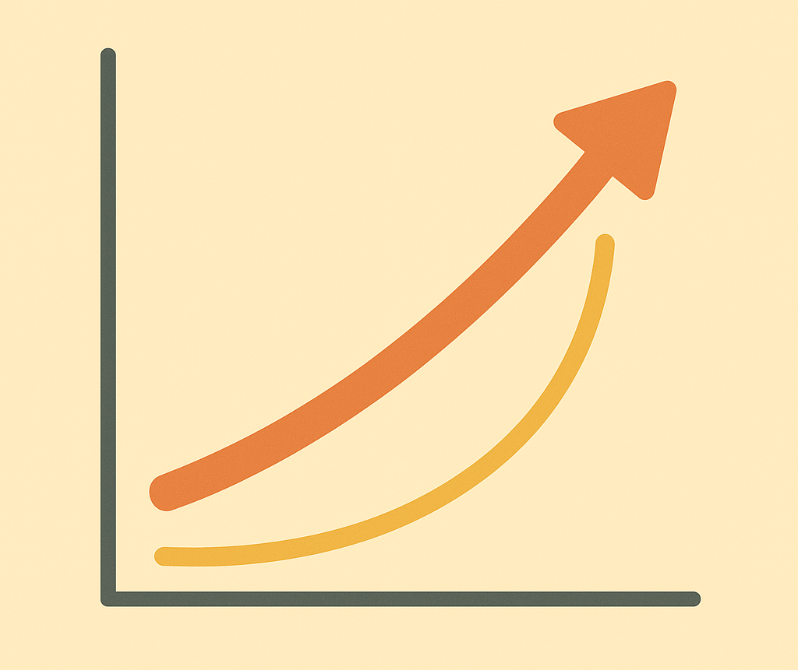

8 Momentum: Investieren mit Trend
8.1 Warum Trends uns faszinieren
Egal, ob bei Musik, Mode, Social Media oder sogar beim Essen – Menschen lieben Trends.
Du kennst das: Ein neuer Song geht viral, plötzlich läuft er überall. Sneakers tauchen auf – zuerst an wenigen Füßen, dann trägt sie jede(r).
In der Finanzwelt passiert genau das Gleiche – nur mit Aktien, Branchen oder Fonds.
Wenn viele Anleger/-innen sich auf ein bestimmtes Thema stürzen, steigt der Preis.
Je mehr Menschen kaufen, desto stärker wird der Trend – bis ihn irgendwann alle kennen.

So funktioniert Momentum‑Investieren: Du nutzt die Kraft der Bewegung, solange sie da ist. Du kämpfst nicht gegen Wellen an, du surfst sie.
8.2 Was bedeutet „Momentum“ eigentlich?
Im Wort steckt das lateinische movimentum – Bewegung.
In der Physik heißt es: Ein Körper in Bewegung bleibt in Bewegung, solange keine Kraft ihn stoppt.
An der Börse bedeutet Momentum: Preise, die gestiegen sind, steigen oft noch eine Weile weiter - und umgekehrt.
Statt zu versuchen, die Zukunft zu erraten, kämpfen Momentum‑Investor/-innen gar nicht gegen Trends. Sie sagen schlicht:
„Wenn der Markt etwas liebt, liebe ich es auch – aber nur so lange, bis die Musik aufhört.“
Momentum ist also kein Widerspruch zu Vernunft, sondern eine offene Beobachtung von Musterverhalten – ein Spiel mit Psychologie und Daten.
8.3 Momentum im echten Leben
Du erlebst Momentum jeden Tag – selbst ohne Börse.
👉 Wenn ein TikTok‑Video viral geht, bekommt es noch mehr Aufmerksamkeit, weil viele es schon gesehen haben.
👉 Wenn ein Kaffee‑Trend – z. B. „Dalgona‑Coffee“ – online explodiert, wollen alle probieren.
👉 Wenn eine Musikerin plötzlich in die Charts schießt, streamen Neugierige ihren Song – der Chartplatz steigt noch weiter. Dasselbe passiert in Märkten. Beliebte Aktien ziehen weitere Käufer/-innen an, der Trend verstärkt sich.
Momentum ist daher nicht nur Mathematik – es ist eine Beschreibung von Menschlichem Verhalten.
Kleine Geschichte: Tesla und Momentum
2019 war Tesla für viele noch eine Nischenmarke - Autofans lästerten über Stromautos. Dann stieg die Nachfrage, Quartalszahlen wurden besser, mehr Leute redeten darüber. Der Aktienkurs begann zu steigen - und je mehr Menschen das sahen, desto mehr kauften mit. In wenigen Monaten vervielfachte sich der Preis.
Das war Momentum pur: Ein Trend, der selbst zum Motor seines Wachstums wurde.
Irgendwann war die Begeisterung zu groß - der Trend flachte ab, die Aktie ging zwischenzeitlich stark zurück.
Momentum lebt also in Phasen: Aufschwung → Euphorie → Abkühlung.
Wer wie ein Surfer früh auf die Welle steigt und rechtzeitig heraus‑paddelt, profitiert - wer zu spät kommt, bekommt Spritzwasser ab.
8.4 Wie Profis Momentum erkennen
Profis messen Momentum systematisch: Sie vergleichen, welche Aktien in den letzten 3 bis 12 Monaten am stärksten gestiegen sind. Die Top‑Gewinner kommen in den Fokus.
Dann überprüfen sie: Sind die Trends noch intakt, gibt es weiterhin Kaufdruck?
Aber du brauchst kein Rechenmodell – du kannst Momentum mit ETFs nachvollziehen.
Es gibt z. B. „iShares MSCI World Momentum ETF“ oder ähnliche Produkte, die automatisch die trendstärksten Unternehmen im Weltmarkt bündeln.

8.5 Warum Trends funktionieren
Investoren sind Menschen – und Menschen sind emotionale Wesen.
A) Herdenverhalten:
Wenn andere kaufen und Gewinne machen, will man nicht außen stehen. Das führt zu weiteren Käufen, die den Trend verlängern.
B) Selbstverstärkung:
Steigende Kurse ziehen neue positive Nachrichten an – und umgekehrt.
C) Trägheit:
Viele Anleger/-innen reagieren nicht sofort auf Nachrichten. Die Preisbewegung verteilt sich über Zeit. Diese Faktoren erzeugen kurzfristige Bewegungen, die länger halten als Zufall allein. So entsteht eine Art Schneeballeffekt – bis der Berg flacher wird.
8.6 Momentum ist mehr als Zocken
Viele verwechseln Momentum mit „Trendjagd“. Doch der Unterschied liegt im System.
Ein Momentum‑Investor:
👉 setzt auf klare Regeln – nicht auf Gerüchte.
👉 hat nicht das Ziel, den genauen Höchstpunkt zu treffen.
👉 verkauft, wenn der Trend bricht – ohne Drama. Das hat mehr mit Disziplin als mit Spekulation zu tun.
Man kann es sich so vorstellen: Du tanzt auf einer Party. Wenn die Musik gut ist, bleibst du. Wenn sie aufhört, gehst du. Ganz einfach.
Kleine Geschichte: Apple und das langsame Momentum
Als Apple 2007 das erste iPhone vorstellte, war es keine Sensation über Nacht. Viele traten skeptisch auf. Doch jedes Jahr wurden Verkäufe und Gewinne höher. Der Aktienkurs stieg ruhevoll, aber konsequent.
Das war ein langsames, stabiles Momentum – Fernab von Hype, mehr eine Reihe von stetigen Erfolgen.
Es zeigt, dass Momentum nicht immer laut sein muss. Es kann auch durch Kontinuität entstehen.
8.7 Wie du Momentum einbauen kannst
Du brauchst keine Software und keine Börsengerüchte.
Einfach Variante: Ein ETF auf „Momentum Factor“ –das Produkt macht die Arbeit für dich.
Oder manuell: Wenn du mehrere Lieblingsbranchen hast, kannst du die Entwicklung beobachten. Nach einiger Zeit siehst du, welche sich positiv entwickeln - diese kannst du (begrenzt) erhöhen und andere reduzieren.
Doch wichtig: Regel bewahren. Nie jagen – beobachten, entscheiden, ruhig bleiben.
8.8 Wann Momentum nicht funktioniert
Kein Trend hält für immer. Wenn Stimmung kippt, werden Gewinne schnell verloren. Darum lernen Profis:
1️⃣ Nie alles auf eine Bewegung setzen.
2️⃣ Nie dem Trend nachlaufen, wenn alle schon drin sind.
3️⃣ Nicht in Crashs panisch umsteigen.
Wer Timing erzwingen will, trifft oft zu spät.
Darum funktioniert Momentum am besten als kleiner Baustein in einem großen System, nicht allein.
8.9 Momentum und Verhalten –dein innerer Kompass
Momentum ist auch eine Übung in Selbstwahrnehmung.
Frage dich:
Bin ich eher jemand, der trendsensibel reagiert oder lieber konstant bleibt?
Beides ist okay. Wenn du Trendbewegungen spannend findest, kann Momentum ein Spiel‑Element deiner Finanzreise werden.
Aber erkenne die Grenzen: Momentum braucht emotionale Neutralität. Surf die Welle, aber verheirate dich nicht mit ihr.
8.10 Momentum und Diversifikation
Denk an Kapitel 5: „Mehrere Körbe heben“.
Momentum fühlt sich abwechslungsreich an - aber du solltest es innerhalb deines breiteren Portfolios sehen.
Ein Beispiel:
👉 70 % Basis‑ETF (Welt)
👉 20 % Emerging Markets oder Wachstumsthemen
👉 10 % Momentum ETF Damit nutzt du Trends, ohne alles auf eine Momentaufnahme zu setzen.
8.11 Momentum ist kein Zauber, sondern Regelmäßigkeit
Ein wichtiger Punkt: Momentum ist messbar und wissenschaftlich belegt. Zahlreiche Finanz‑Studien zeigen, dass Aktien mit gutem Vergangenheits‑Trend im Schnitt etwas besser laufen – nicht immer, aber häufiger als zufällig.
Warum?
Weil die Welt träge reagiert. Nach guten Nachrichten kaufen Investoren nicht alle sofort, sondern gestaffelt – so setzt sich die Bewegung fort.
Doch irgendwann gleicht sich alles aus - daher muss Momentum „nachjustiert“ werden. ETFs tun das automatisch.
Fazit: Es ist nicht Magie, sondern menschliches Tempo.
8.12 Dein Momentum‑Plan –in vier Schritten
1️⃣ Beobachte: Welche Themen oder Branchen haben momentan Schwung? Beispiel: Erneuerbare Energien, künstliche Intelligenz, Gesundheit.
2️⃣ Überprüfe: Sind sie bereits überhitzt (alle reden davon) oder noch in Bewegung?
3️⃣ Kleine Position: Ein ETF auf Momentum oder Themenbereich mit max. 10 % deines Portfolios.
4️⃣ Ruhig bleiben: Keine wöchentlichen Ein‑/Ausstiege – Momentum lebt von Geduld und klarer Regel.
8.13 Fallstricke –wenn Trend zu Hype wird
Erinnere dich an Bubbles wie die „Dotcom‑Blase“ 2000 oder die „Krypto‑Hysterie“ 2017: Riesige Trends, bis sie platzen – weil jeder nur noch wegen des Trends kaufte.
Merke daraus: Wenn Nachbars Hund Aktientipps gibt, ist der Trend vielleicht am Ende.
Ein reifer Momentum‑Ansatz endet bevor Gier beginnt.
Schreibe dir zur Erinnerung: „Ich nutze Trends, nicht um reich zu werden, sondern um mit der Bewegung zu gehen und rechtzeitig auszusteigen.“
8.14 Momentum im Kleinen lernen
Du kannst Momentum üben, ohne Geld einzusetzen:
Schau dir Aktien‑ oder ETF‑Charts über die letzten 12 Monate an - erkennst du steigende Linien? Wann wurde der Trend gebrochen?
Dieses „Beobachten‑ohne‑Handeln“ schärft dein Gefühl für Bewegungen - und hilft dir, später ruhig zu entscheiden.
8.15 Momentum und Mindset
Momentum‑Investieren lehrt dich drei Soft Skills:
- Achtsamkeit: Bewegungen erkennen, ohne zu überreagieren.
- Disziplin: Regeln einhalten, selbst wenn Emotionen locken.
- Loslassen: Trends gehen lassen, wenn sie vorbei sind.
Das sind Fähigkeiten, die weit über Finanzen hinaus nützlich sind.
8.16 Kurze Zusammenfassung
👉 Momentum = „Bewegung nutzen“.
👉 Preise haben Trägheit – gut Laufendes läuft oft eine Zeit weiter.
👉 Psychologie und Daten machen es möglich.
👉 Du kannst Momentum automatisch über Faktor‑ETFs nutzen.
👉 Nie alles auf einen Trend setzen.
👉 Kombiniere Trends mit breiter Basis = Stabilität + Dynamik.8.17 Zum Nachdenken
„Der Trend ist dein Freund – bis er es nicht mehr ist.“
Das ist der älteste Satz an der Börse – und wahrscheinlich der klügste.
Lerne ihn nicht auswendig, sondern lebe ihn: Beobachte, genieße, und hab den Mut, rechtzeitig auszusteigen.
8.18 Ausblick
Im nächsten Kapitel begegnen wir dem Gegensatz von Momentum: „Low Risk“.
Du wirst sehen, dass manchmal gerade die langsameren, unspektakulären Anlagen auf lange Sicht gewinnen – so wie die Schildkröte im Märchen.